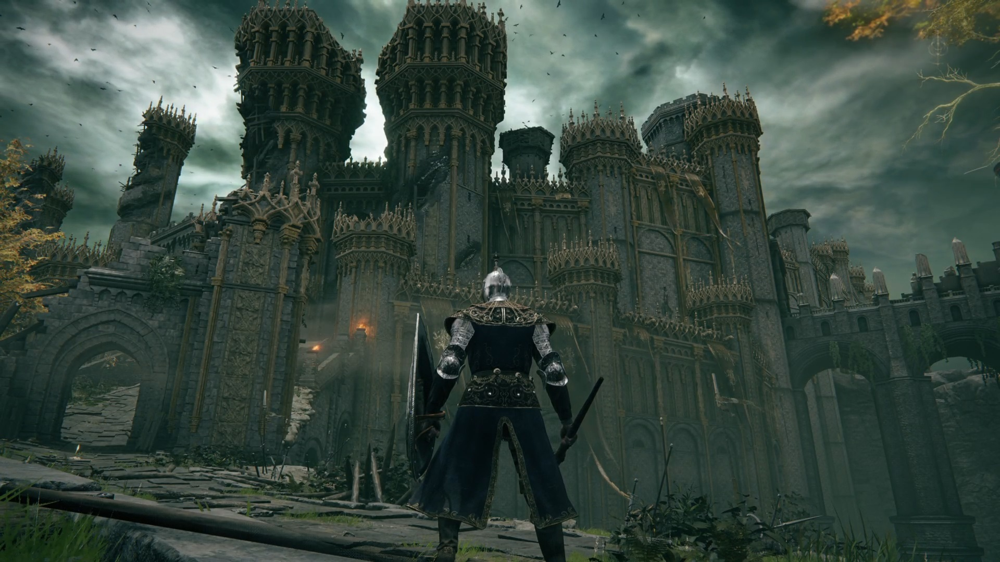

Viết bởi Trần Minh Triết Cập nhật: 12-12-2021 11:05 pm Đăng: 10-12-2021 10:00pm
Viết bởi Trần Minh Triết Cập nhật: 12-12-2021 11:05 pm Đăng: 10-12-2021 10:00pm
Trong sáu tháng qua, chúng ta đã thấy rất nhiều Elden Ring, chúng ta đã nghe rất nhiều về Elden Ring, nhưng rất ít người, ngoại trừ người trong From Software, đã chơi Elden Ring. Điều đó không còn xảy ra nữa vì vào cuối tuần trước, tôi thấy mình đã hoàn toàn đắm chìm trong thế giới của The Lands Between. Nhiều người khác cũng sẽ giống tôi sau khi Closed Network Test mở ra cho tất cả những người được chọn tham gia từ ngày 12 đến ngày 14 tháng 11.
Đối với những người muốn có cái nhìn sớm về Elden Ring, đây là ấn tượng của tôi về Elden Ring Closed Network Test.
Ảnh chụp màn hình của Trailer Elden Ring - Lễ hội mùa hè

Trước khi chúng ta tìm hiểu những cái gì mới trong Elden Ring, hãy cùng tìm hiểu những điều quen thuộc. Dù gì, đây vẫn là trò chơi tiếp theo trong series nhập vai hành động của FromSoft, từ lâu đã phát triển vượt trội và toàn diện so với bất kỳ loại nhãn nào, trừ khi bạn muốn gọi loạt series này là series “Elden-Seki-Souls-Borne”.
Chậm mà chắc
Elden Ring tượng trưng rất nhiều cho sự trở lại của phong cách Souls, thể hiện rõ nhất trong bối cảnh giả tưởng đen tối nhưng cũng thể hiện sự chân thực trong lối chơi và cơ chế của nó. Nó mang lại hệ thống tách biệt Estus Flask từ Dark Souls 3, cho phép bạn chọn ưu tiên các lựa chọn phục hồi máu hoặc phục hồi năng lượng bằng cách phân phối bình của bạn theo cách bạn thấy là phù hợp.
Chiến đấu chậm hơn và bài bản hơn nhiều so với Sekiro và Bloodborne
Chiến đấu chậm hơn và bài bản hơn nhiều so với Sekiro và Bloodborne, với thời gian khởi động và phục hồi thường khá dài đối với hầu hết các đòn tấn công của bạn và khi hồi máu, buộc bạn phải chọn vị trí của mình và chọn đúng thời điểm để tấn công, phòng thủ và uống một ngụm của một bình Estus.
Cũng có một số công cụ mới trong thời gian này. Một kỹ thuật mới được gọi là phòng thủ bảo vệ cho phép bạn thực hiện một cuộc phản công mạnh sau khi chặn một đòn tấn công bằng lá chắn của bạn. Và ở khía cạnh tấn công, bạn có thể thực hiện một cuộc tấn công bằng cú nhảy tách siêu thỏa mãn có thể đâm xuyên qua các lá chắn và khiến kẻ thù yếu hơn không thể tự vệ.
Tuy nhiên, thay đổi lớn nhất về cơ chế thực tế là cách Elden Ring xử lý vũ khí (hoặc kỹ năng) và các hướng để nâng cấp
Trước đây, kỹ năng vũ khí là những kỹ năng đặc biệt dành riêng cho một vũ khí hoặc loại vũ khí, chẳng hạn như tư thế battoujutsu là của lớp vũ khí katana trong Dark Souls 3. Mặt khác, hướng để nâng cấp đề cập đến khả năng của bạn để biến một vũ khí thành một loại khác, đưa nó theo một hướng khiến cho nhiều sát thương cơ bản hơn, thuộc tính nguyên tố hoặc tăng tỷ lệ với một chỉ số cụ thể.
Hai cơ chế này về cơ bản đã được kết hợp trong Elden Ring dưới dạng Tro tàn của Chiến tranh. Khi chơi, bạn sẽ tìm thấy Ashes of War mới có thể được trang bị cho vũ khí của bạn tại các địa điểm của Grace - phiên bản lửa trại của Elden Ring. Việc trang bị "Ash of War" mới cho một vũ khí sẽ không chỉ thay đổi chỉ số và tỷ lệ của vũ khí đó mà còn ghi đè kỹ năng hiện tại của vũ khí bằng một kỹ năng mới và duy nhất cho Ash of War đó.
Ví dụ, giả sử nhân vật tập trung vào trí thông minh của tôi tìm thấy một thanh kiếm đôi. Thông thường không phải là vũ khí tôi muốn sử dụng cho một nhân vật tập trung vào phép thuật, nhưng đó là thứ tốt nhất mà tôi có được và này, nó có một cách bộ di chuyển rất ngầu. Sau đó, tôi tìm thấy "Ash of War: Glintsword Arch", không chỉ cung cấp thanh kiếm đôi tăng sức mạnh theo chỉ số thông minh, khiến nó có thể trở thành vũ khí cận chiến cho lối chơi của tôi. Nhưng nó còn cho tôi kỹ năng của Glintsword Arch triệu hồi bốn thanh kiếm ma thuật tự động bay về phía kẻ thù đến gần. Giờ đây, thanh kiếm đôi không chỉ hoạt động như một vũ khí cận chiến tuyệt vời cho cách chơi của tôi, mà nó còn đi kèm với một câu thần chú mạnh mẽ không chiếm một trong những chỗ phép thuật trống của tôi.
Điều tuyệt vời nhất là Ashes of War có thể chuyển nhượng và không bị tiêu hao khi sử dụng, vì vậy nếu sau này tôi tìm thấy vũ khí mà tôi thích hơn Thanh kiếm đôi, tôi có thể đặt Glintstone Arch Ash of War lên nó và dễ dàng chuyển đổi sang vũ khí mới, điều luôn khó và tốn kém để làm trong các trò chơi Souls khác khi bạn đã nâng vũ khí theo một hướng nâng cấp cụ thể.
Ashes of War khuyến khích thử nghiệm và mở ra rất nhiều lựa chọn lối chơi đa dạng
Nếu nó chưa quá rõ ràng, tôi thích điều này. Nó khuyến khích thử nghiệm với các loại vũ khí khác nhau, mở ra rất nhiều tùy chọn xây dựng, mang lại cho tôi một loại phần thưởng khác để tôi hào hứng với việc tìm kiếm trong thế giới này và các kỹ năng cũng rất tuyệt vời để mà thử nghiệm.
Một thế giới thực sự mở
Tuy nhiên, sự khởi đầu lớn đối với Elden Ring là sự chuyển dịch sang một cấu trúc thế giới mở hoàn toàn. Ngay từ khi bạn bước ra khỏi hang hướng dẫn chơi, bạn có thể tự do đi theo bất kỳ hướng nào bạn chọn. Bạn có thể đi theo con đường được đề nghị, được chiếu sáng bởi ánh sáng của "Grace"; bạn có thể nhìn sang bên phải của mình và quyết định khám phá hồ nước và tàn tích có vẻ đáng ngại, hoặc bạn có thể quay lại và phát hiện ra một hòn đảo ở phía xa và tự nghĩ rằng ‘Tôi tự hỏi làm thế nào tôi có thể đến đó…”
Các khu vực không bị hạn chế bởi có những kẻ thù khó khăn hơn ở một địa điểm so với một địa điểm khác. Bạn sẽ tìm thấy những trận chiến có thử thách như nhau ở mọi hướng và bạn có thể giải quyết chúng theo bất kỳ thứ tự nào bạn chọn. Tuy vậy, khu vực trong Thử nghiệm kín được bao quanh bởi các rào cản vô hình, vì vậy khó có thể nói điều này sẽ như thế nào trong toàn bộ trò chơi.
Điều đặc biệt ấn tượng về Thử nghiệm mạng kín này là mặc dù tôi bị giữ trong một khu vực tương đối nhỏ, vẫn còn rất nhiều điều để khám phá và tìm hiểu. Từ những NPC cho đến những tên Boss chỉ đi lang thang trên cánh đồng, đến nhiều kẻ thù cực kỳ thách thức mà bạn có thể tấn công để kiếm các mảnh nâng cấp vũ khí, đến một mảnh đất nơi sấm chớp liên tục để lại những tảng đá tích điện mà bạn có thể nhặt lên. Nó cho tôi cảm giác như cứ sau năm phút, tôi sẽ gặp phải một điều gì đó khiến tôi phải thốt lên "cái quái gì vậy ?!"

Và sau đó là những ngục tối và hầm mộ ẩn trên khắp thế giới, giống như những ngôi đền trong Breath of the Wild. Những hầm ngục này rất đa dạng trong thiết kế của chúng, với một số chỉ bao gồm hai đến ba phòng, một số ít kẻ thù và một con Boss ở phòng cuối. Những hầm ngục khác yêu cầu một ngọn đuốc để nhìn thấy kẻ thù và mối nguy hiểm bên trong; và những cái khác vẫn là những hang động lớn, nhiều tầng, với một số điều ngạc nhiên cho những người kỳ cựu lâu năm mà tôi không muốn làm hỏng.
Những con Boss trong các ngục tối này không khó bằng những con Boss chính được tìm thấy trên thế giới, nhưng chúng vẫn rất đáng để tìm kiếm vì phần thưởng luôn xứng đáng với công sức mà tôi đã trải qua.
Elden Ring - Ảnh chụp màn hình Gameplay

Elden Ring "tha thứ" một cách đáng ngạc nhiên khi nói đến việc khám phá thế giới mở của nó. Nhân vật của bạn không tiêu hao bất kỳ thể lực nào khi ở ngoài chiến đấu, do đó bạn có thể chạy, nhảy và lăn không ngừng. Có các điểm hồi sinh tự động được kích hoạt trong các khu vực khó đánh bại, vì vậy bạn hiếm khi phải thực hiện một chặng đường dài xấu hổ để lấy lại "số tiền" đã đánh rơi của mình nếu bạn chết. Và kẻ thù thậm chí sẽ giữ lại thiệt hại của chúng nếu bạn bỏ chạy, vì vậy bạn có thể chơi đánh và chạy trên con ngựa của mình tất cả những gì bạn muốn.
Ngục tối Di sản là gì?
Mặc dù tôi yêu thích từng chút của cuộc khám phá thế giới mở, nhưng có cảm giác như còn thiếu một thứ gì đó trong gói tổng thể vốn không được lấp đầy bởi các hầm ngục ẩn trên khắp thế giới. May mắn thay, đó là nơi Ngục tối Di sản đi vào. Đây là những tầng dài và dơn giản rất giống như Anor Londo trong Dark Souls.
Tôi chỉ mới được nếm thử một chút của Lâu đài Stormveil, nơi đầu tiên trong số các Ngục tối Di sản ở Elden Ring, nhưng chỉ một chút thôi là quá đủ để kích thích sự thèm ăn của tôi thêm nữa. Lâu đài Stormveil rất lớn, với nhiều con đường ngay từ đầu mà mỗi con đường đều có những thách thức riêng. Đi theo con đường phụ và bạn sẽ gặp phải địa hình hiểm trở và việc kinh điển của From Software là có một nhóm người với bom lửa giám sát một con đường với một loạt các thùng thuốc nổ. Đi theo con đường chính và bạn sẽ gặp một đội quân nhỏ và một số ít máy bắn tên, tất cả đều được huấn luyện để bắn ngay khi thấy.
Mặc dù được đưa ra với sự lựa chọn một trong hai, tôi vẫn thấy mình đi xuống cả hai con đường. Và mặc dù cuối cùng cả hai đều bị chặn vì do Network Test, nhưng tôi rất nóng lòng được xem cách họ kết nối trở lại với nhau trong phiên bản đầy đủ.
Tôi không có nhiều cơ hội để thử nhiều người chơi do có một số lượng tương đối nhỏ người chơi trong Closed Network Test, nhưng mọi thứ có vẻ giống như giá vé khá chuẩn. Bạn có thể để lại các dấu hiệu triệu hồi cho cả chơi hợp tác và cạnh tranh, bạn có thể xâm nhập thế giới của người khác, bạn có thể đeo những chiếc nhẫn sẽ triệu hồi bạn vào thế giới đang bị xâm chiếm để bạn có thể cố gắng bảo vệ những người vô tội và bạn có thể đeo những chiếc nhẫn sẽ kêu gọi ra ngoài để được giúp đỡ khi bạn bị xâm lược.
Tuy nhiên, có một số điều cần lưu ý: Nếu như bạn sẵn sàng PVP xâm lược nếu như bạn đã triệu tập một người chơi để chơi hợp tác với bạn. Nếu không, bạn sử dụng một vật phẩm có tên là Taunter’s Tongue, vật này sẽ ra hiệu cho những kẻ xâm lược đến thế giới của bạn ngay cả khi bạn không có bạn coop để giúp. Ngoài ra còn có một vật phẩm tên là Finger Phantom chỉ có thể được sử dụng trong khi đang xâm lược nhiều người chơi, nhưng tôi không thể tìm thấy bất kỳ vật phẩm nào trong thời gian chơi của mình.
Tôi đã dành gần 15 giờ chỉ cho riêng Closed Network Test này, trải qua từng lớp giai cấp khác nhau trong số năm giai cấp bắt đầu và vượt qua các bước của chúng, và tôi vẫn còn rất ngạc nhiên. Nếu phiên bản đầy đủ của Elden Ring tiếp tục phù hợp với chất lượng của thiết kế thế giới mở chỉ trong khu vực đầu tiên này, thì chúng ta sẽ có một trò chơi rất đặc biệt vào tháng 2 năm sau.